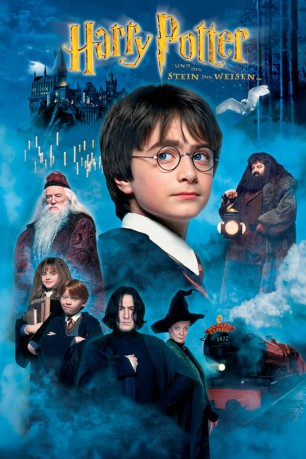

Auszeichnungen: für 3 Oscars nominiert
 gesehen am 09.03.2015
gesehen am 09.03.2015Alternativ: Harry Potter and the Sorcerer's Stone
Auszeichnungen: für 3 Oscars nominiert gesehen am 09.03.2015
 
 IMDB-Wertung: 7.6 / 10
IMDB-Wertung: 7.6 / 10  Metascore:
Metascore: 
Harry Potter erfährt an seinem 11. Geburtstag, dass seine verstorbenen Eltern mächtige Zauberer waren und auch er selbst magische Kräfte besitzt. Als er von Hogwarts, der Schule für Hexerei und Zauberei, aufgenommen wird, erlebt Harry das Abenteuer seines Lebens. Er lernt Quidditch, das hoch in der Luft gespielt wird, und auf dem Weg, sich einem schwarzen Magier zu stellen, der ihn vernichten will, muss Harry eine spannende Schachpartie mit lebenden Figuren überstehen…
Jahr: 2001
Dauer: 152 Minuten
FSK: 6
Land: England Studio: Warner Bros.Tonspuren: DD5.1 - ,
Untertitel:
Auflösung: 1080p (1920×800) Größe: 15974 MB
Genre: Abenteuer, Familie, Fantasy
Regisseur:  Chris Columbus
Chris Columbus
Drehbuch: J.K. Rowling, Steve Kloves
Soundtrack: John Williams
Darsteller:
 Richard Harris als Professor Albus Dumbledore
Richard Harris als Professor Albus Dumbledore Maggie Smith als Professor Minerva McGonagall
Maggie Smith als Professor Minerva McGonagall Robbie Coltrane als Rubeus Hagrid
Robbie Coltrane als Rubeus Hagrid Daniel Radcliffe als Harry Potter
Daniel Radcliffe als Harry Potter Fiona Shaw als Aunt Petunia Dursley
Fiona Shaw als Aunt Petunia Dursley Harry Melling als Dudley Dursley
Harry Melling als Dudley Dursley Ian Hart als Professor Quirinus Quirrell
Ian Hart als Professor Quirinus Quirrell Warwick Davis als Goblin Bank Teller / Professor Flitwick
Warwick Davis als Goblin Bank Teller / Professor Flitwick Verne Troyer als Griphook the Goblin
Verne Troyer als Griphook the Goblin John Hurt als Mr. Ollivander
John Hurt als Mr. Ollivander Richard Bremmer als He Who Must Not Be Named
Richard Bremmer als He Who Must Not Be Named Geraldine Somerville als Lily Potter
Geraldine Somerville als Lily Potter Julie Walters als Molly Weasley
Julie Walters als Molly Weasley Bonnie Wright als Ginny Weasley
Bonnie Wright als Ginny Weasley Chris Rankin als Percy Weasley
Chris Rankin als Percy Weasley James Phelps als Fred Weasley
James Phelps als Fred Weasley Oliver Phelps als George Weasley
Oliver Phelps als George Weasley Rupert Grint als Ron Weasley
Rupert Grint als Ron Weasley Emma Watson als Hermione Granger
Emma Watson als Hermione Granger Matthew Lewis als Neville Longbottom
Matthew Lewis als Neville Longbottom Tom Felton als Draco Malfoy
Tom Felton als Draco Malfoy Jamie Waylett als Vincent Crabbe
Jamie Waylett als Vincent Crabbe Josh Herdman als Gregory Goyle
Josh Herdman als Gregory Goyle Devon Murray als Seamus Finnigan
Devon Murray als Seamus Finnigan Alfred Enoch als Dean Thomas
Alfred Enoch als Dean Thomas Leslie Phillips als The Sorting Hat
Leslie Phillips als The Sorting Hat John Cleese als Nearly Headless Nick
John Cleese als Nearly Headless Nick Terence Bayler als The Bloody Baron
Terence Bayler als The Bloody Baron Nina Young als The Grey Lady
Nina Young als The Grey Lady David Bradley als Argus Filch
David Bradley als Argus Filch Alan Rickman als Severus Snape
Alan Rickman als Severus Snape Adrian Rawlins als James Potter
Adrian Rawlins als James Potter Ray Fearon als Firenze
Ray Fearon als Firenze Julianne Hough als Hogwarts Schoolgirl , uncredited
Julianne Hough als Hogwarts Schoolgirl , uncredited Richard Alan Reid als Gryffindor Prefect , uncredited
Richard Alan Reid als Gryffindor Prefect , uncredited Miles Richardson als Man in Armour Portrait , uncredited
Miles Richardson als Man in Armour Portrait , uncredited Kiran Shah als Goblin , uncredited
Kiran Shah als Goblin , uncreditedDatei: X:\7+mehr(A-Z)\Harry Potter\Harry Potter 1 - und der Stein der Weisen (2001, FSK6, 1920x800).mkv seit 15.02.2015
Festplatte: HD Collection-7+mehr(A-Z)+Person
 Es gibt insgesamt 17 Filme in der Gruppe '7+mehr(A-Z)\Harry Potter'
Es gibt insgesamt 17 Filme in der Gruppe '7+mehr(A-Z)\Harry Potter'